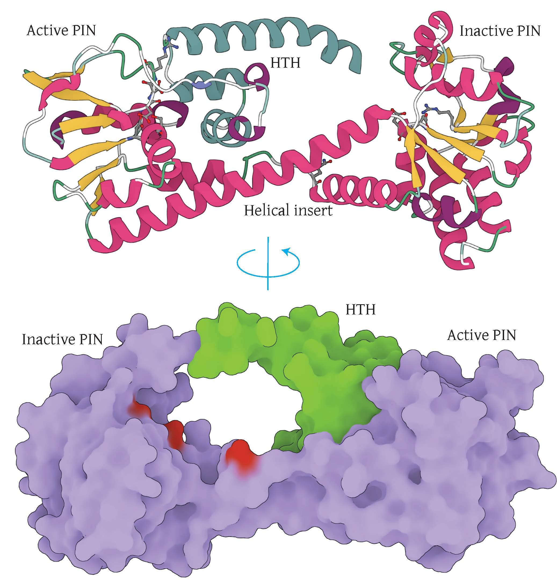

Supplementary Figure 2. Double PIN structure model.
(A) Cartoon representation of the double PIN domain. β-strands are depicted in yellow, α-helices in dark pink, and the HTH domain in dark cyan. Catalytic residues are shown in ball-and-stick representation.(B) Molecular surface representation demonstrating the occlusion of the active PIN site by the HTH domain. The two PIN domains are represented in purple, the HTH domain in green, and the position of the inactive catalytic residues of the inactive PIN domain is depicted in red.